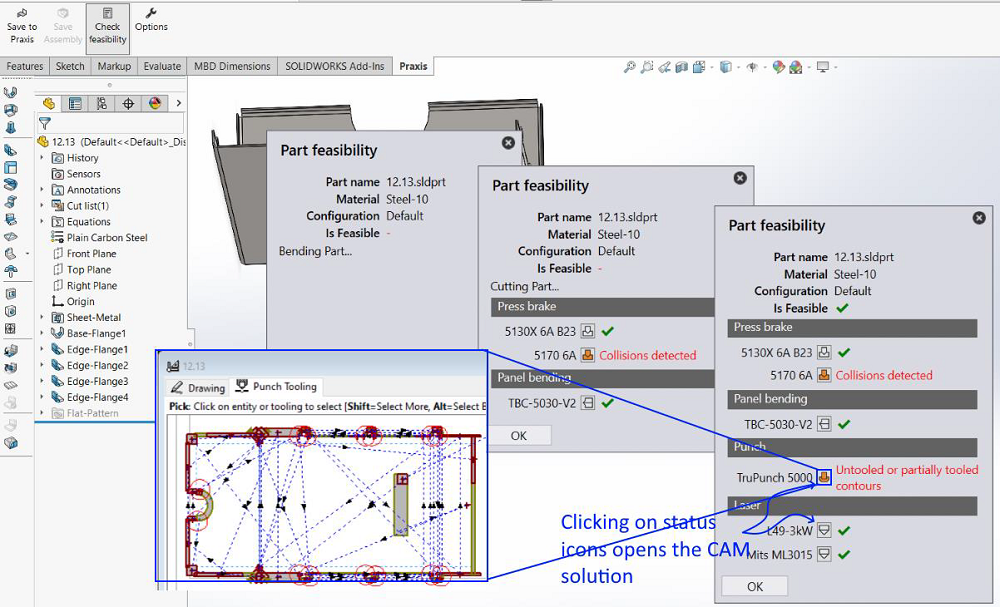
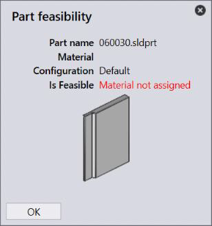
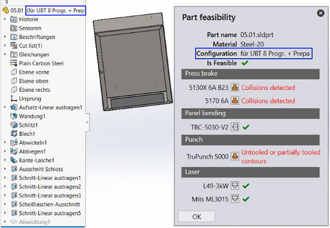

Use the Check feasibility command from the Praxis command tab to check a sheetmetal part for the production feasibility. The feasibility dialog appears and displays the feasibility progress. The feasibility is evaluated by running same work steps, with the same settings which the Praxis engine uses to prepare the part for production when it is uploaded to the Praxis part library. The feasibility is performed without uploading the part and therefore it doesn’t replace the part or outputs if a part with same name already exists in the library. Instead of working with the original CAD source, a temporary file is saved for the feasibility analysis and is deleted after the analysis. As the original stays unchanged after the process, this can be a useful what-if design aid for the design team and can save multiple round trips between CAD and CAM departments.
The feasibility dialog displays the feasibility results for all available factory machines. Click on the technology icon to open 1 the evaluated technology file in the CAM (Flux/MetaCAM) for more details.

The feasibility check stops at the first blocking error from where the progress is not possible. For the parts with multiple configurations, select configuration in SW to perform feasibility check for a specific configuration.
 